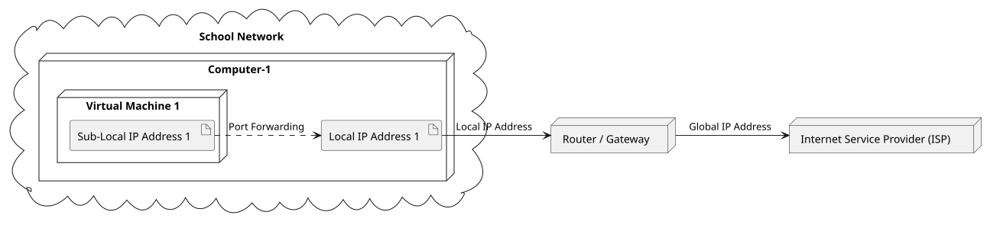
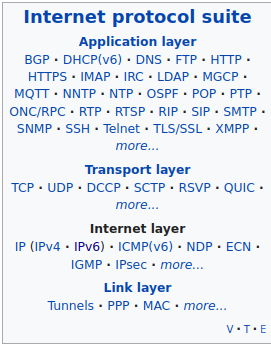
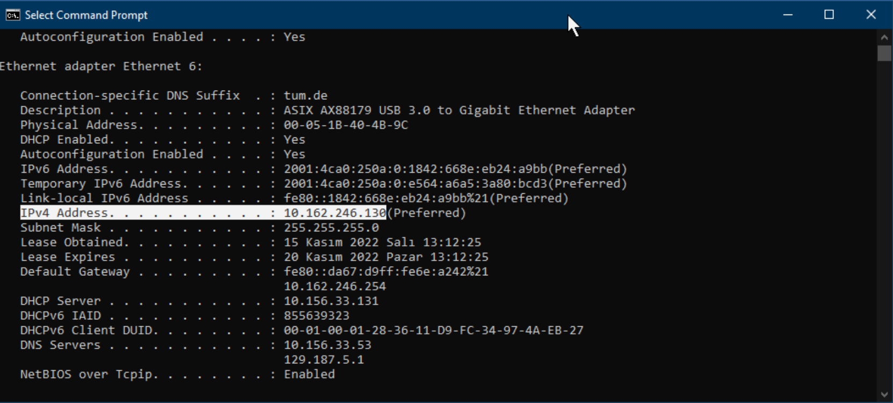
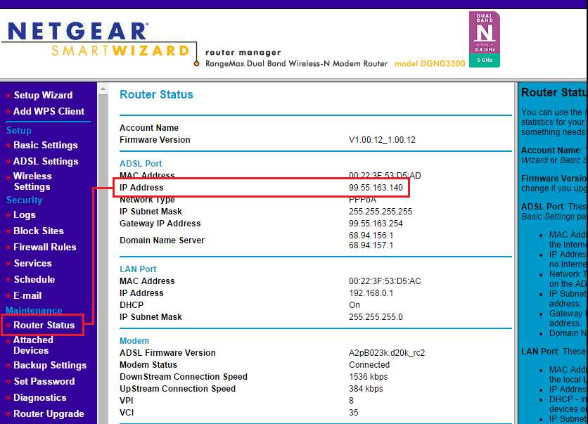
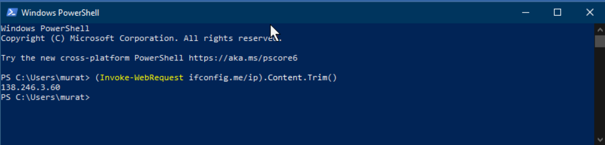
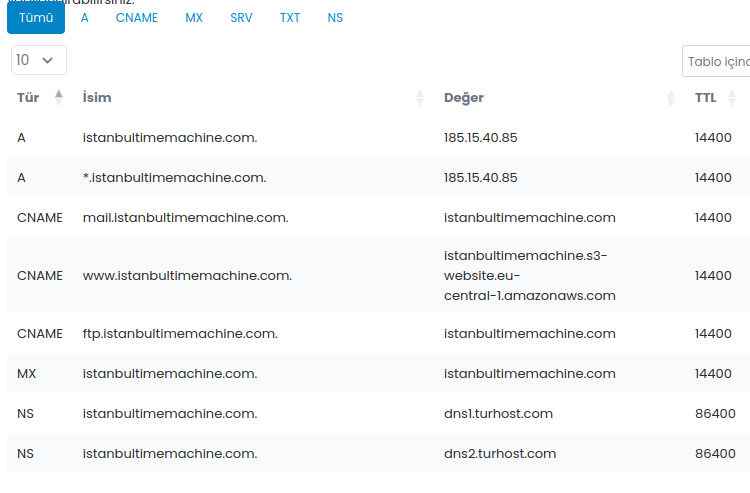
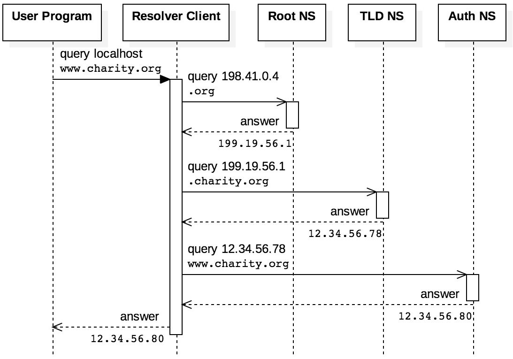
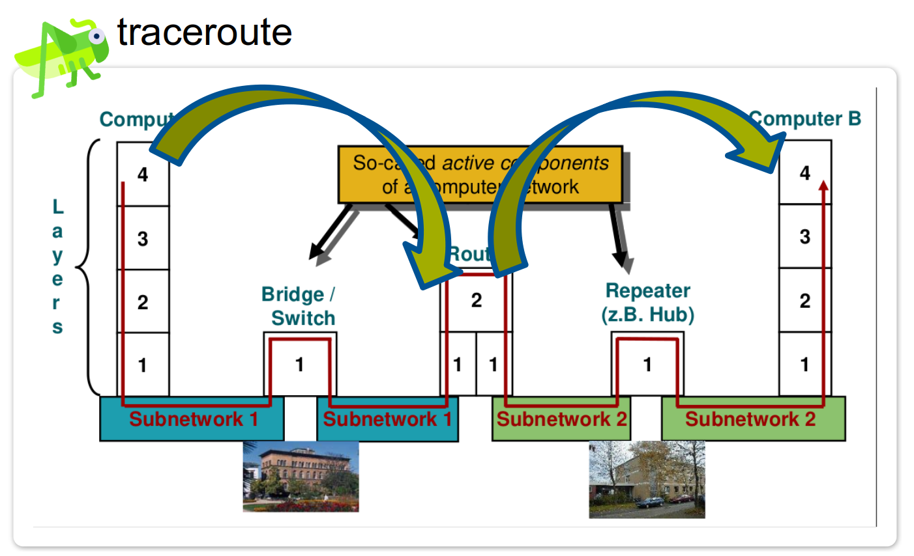
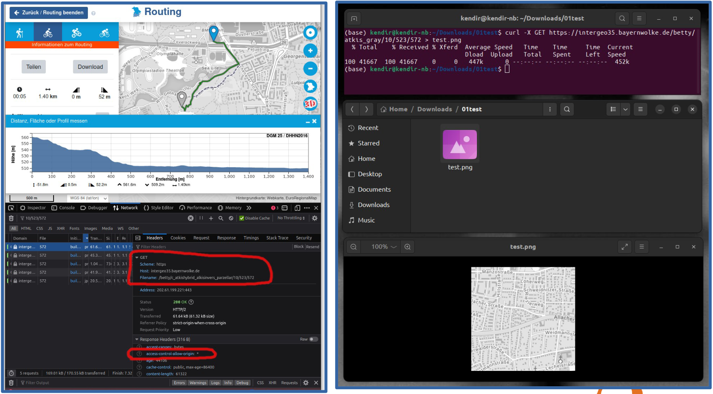
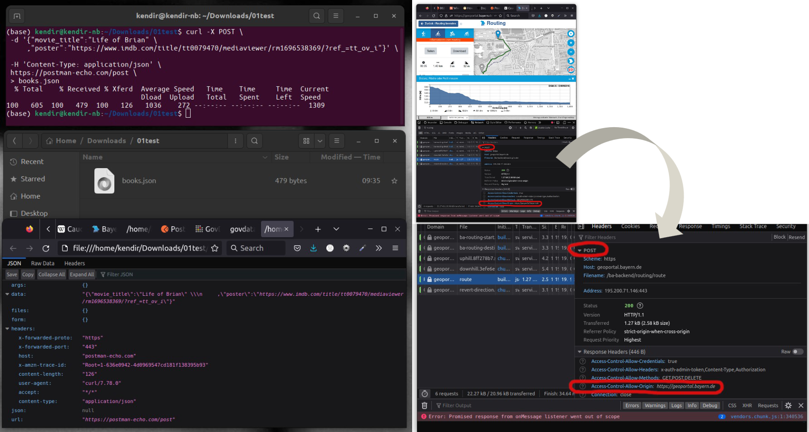

Exercise - Computer Networks & Internet
Munich Technical University / Chair of Geoinformatics
Murat Kendir*, Rupal Srivastava, Prof. Thomas Kolbe
murat.kendir@tum.de
Table of Contents
- 1. Examining the Network and the Internet Infrastructure
- 2. Ping Command
- 3. Background Information about the Current Internet Infrastructure (Optional Step)
- 4. Dig Command (on Linux)
- 5. Traceroute Command (available on Linux)
- 6. nc (netcat) Command
- 7. curl Command
- 8. Exercise: Why Can’t I Access a Website?
1. Examining the Network and the Internet Infrastructure
%%plantuml
@startuml
cloud "School Network" {
node "Computer-1" as computer1 {
node "Virtual Machine 1" {
artifact "Sub-Local IP Address 1" as add11
}
artifact "Local IP Address 1" as add1
}
}
node "Router / Gateway" as edge
node "Internet Service Provider (ISP)" as isp
add1 -> edge : Local IP Address
add11 .> add1 : Port Forwarding
edge -> isp : Global IP Address
@enduml
Writing output for /home/murat/gitpot/dist-gis-exercises/docs/notebooks/f3f4cef7-8271-4c83-9847-c02fd7fc99ed.uml to f3f4cef7-8271-4c83-9847-c02fd7fc99ed.svg

1.1. IP Addresses
1.1.1. Local IP Address
The following steps explain how to reveal IP addresses using command-line based applications. This means you need to run a Command Line Interface (CLI) tool to execute them. Traditionally, CLI tools are called “Command Prompt” (or CMD) on Windows systems and “Terminal” on Unix-based systems.
The name of the Command Prompt application is called “EinGabeAufForderung” on Windows computers with German as the system language.
As an alternative for CMD, you can also use Powershell CLI tool in Windows computers.
In Windows Systems, it is possible to reveal out the IP addresses (both of v4 and v6) with the ipconfig command
In Linux-based Systems, you can use multiple commands such as ip, ifconfig etc.
On Linux-based Systems, inet stands for Ipv4， inet6 stands for Ipv6.
You can view the gateway address — the entry/exit point between networks, typically managed by the router — using the ip route command. Entries containing the dhcp flag indicate your local machine's gateway address.


1.1.2. Global IP Address
There are many methods for revealing a computer network's global IP address. This IP address is usually automatically assigned to users by their ISP company. In some cases, users may prefer not to change their global IP addresses. In this case, they can request static IP addresses from their ISP.
Method 1: Using a web site
- whatismyipaddress.com
- myip.com
- geolocation.com ( includes Location Information)
- duckduckgo.com/?&q=my+ip (via Search Engine)
Method 2: Accessing to router interface

Method 3: Sending a request to an API
Windows Powershell Command:

Linux Terminal Command:
Via "NSLookUp":
TIP: If your Unix-based system cannot run the nslookup or ifconfig commands, you can search for and install the “net-tools” package in your system's default application repository. For example, on Ubuntu, it can be installed with the command
sudo apt install net-tools
1.1.3. How to reveal an IP address of a web source?
NSLookup is a tool that can be used to query a server's DNS records. By default, this tool checks the A-type DNS record. However, there are other types of DNS records that can be queried using the same tool.

If not restricted for security purposes, it is possible to resolve the IP address of web servers that provide certain services through domain(s). For this purpose, "nslookup" or some web applications (such as mxtoolbox.com, nslookup.io) can be used.
- Copy the IP adress of the web server and by using the command above and paste into address bar of your browser.
- What is the result?
TIP : If you query an IP address directly using the nslookup command, it performs a reverse lookup by querying the in-addr.arpa (IPv4) or ip6.arpa (IPv6) zone. If a PTR record exists for that address, the command returns the domain name mapped to the IP.
1.1.4. Checking other DNS records of a domain
You can set the type option to expose out other DNS record types (A, AAA, CNAME, MX, NS, SOA):
- Visit the page mxtoolbox.com or dnstools.ch website to query DNS records for the same domain.
DNS Record Types
| Record Type | Description |
|---|---|
| A | Maps a domain name to an IPv4 address. |
| AAAA | Maps a domain name to an IPv6 address. |
| CNAME | Creates an alias that points one domain name to another canonical domain name. |
| MX | Specifies the mail servers responsible for receiving email for a domain. |
| NS | Specifies the authoritative name servers for a domain or DNS zone. |
| SOA | Contains administrative information about a DNS zone, including the primary name server, administrator contact, serial number, and timing parameters. |
2. Ping Command
The “Ping” command can be used to measure network performance between the request and the web resource. Keep in mind that the purpose of the web resource may cause differences in the results. In addition, the location of the request may also affect the result. (For example, querying a web resource located in China from Frankfurt does not mean that the same web resource will return the same result in China.)
- Type “ping -n amazon.DOMAIN_SUFFIX” for different countries that may be near or far from the current country. (For Exp. COM / DE / AU / NZ / CN )
ping -c 3 mit.edu(using a CDN which serves sources from Germany)ping -c 3 stanford.edu(located in USA)ping -c 3 www.tsinghua.edu.cn(located in China)ping -c 3 sydney.edu.au(located in Australia)ping -c 3 www.u-tokyo.ac.jp(located in Japan)
TIP: "Count" option named as "Number" in the Windows version of the ping command. Use "-n" option instead of "-c" in Windows computers.
TIP: In a unix-based system, you can use geoiplookup to resolve the location of the web resources.
3. Background Information about the Current Internet Infrastructure (Optional Step)
If you would like to learn more about the current internet infrastructure, you can visit the following websites or follow the instructions below.
- Global Internet Map (2022): telegeography
- 40 Maps that Explain Internet (Vox, 2014) : vox.com/a/internet-maps
- Map of the Submarine Cables (2025) : submarinecablemap.com
- Check the Cloud Service Reachability with "cloudping" online tool:
- Visit and make ping test for any cloud service provider cloudping.cloud
- Use a VPN browser extension to spoof your location as another country and try the ping test again.
4. Dig Command (on Linux)
If your Unix-based system does not have the "dig" program, you can install it by installing the "dnsutils" program.
- Type
dig <WEB_DOMAIN>to resolve the DNS records of the given domain.- Copy the IP address shown as the target machine for the "A" type DNS record.
- Type
dig +answer -x <COPIED_IP_ADDRESS>to perform a reverse lookup. - If you have a web domain name, you can compare the previous results with the records accessible from your domain name management system. (For exp. go to Domains > DNS-Records in GoDaddy web site)
- Alternatively, you can visit dnschecker.org and query for the same web sites using "DNS-Lookup" tool.

5. Traceroute Command (available on Linux)
To expose the "hops" while you request any source from internet, you can use "traceroute" command. Traceroute is a standalone application that can be installed with command sudo apt install traceroute. Another option is using dig with "+trace" argument (For exp. dig <WEB_DOMAIN> +trace). Note that the location of the person making the request plays an important role in the route of the hops that appear as a result of the traceroute query.
- Find a web domain name whose server is located in Germany and try the traceroute command with it.
- Sample :
traceroute tum.deordig tum.de +trace
- Sample :
- Find a web domain name whose server is located in far country and try traceroute command on it.
- Alternatively, you can spoof your location using VPN browser extension and run the traceoute command.
TIP: If you cannot run the traceroute or dig command on your Linux machine, you can use the tracing tools available on the online network tool sites mentioned earlier.

6. nc (netcat) Command
nc (netcat) is a versatile command-line tool on Linux for establishing network connections and exchanging data between machines. It provides raw data streams over TCP or UDP. Its most basic use is connecting to a specific IP address and port:
This command opens a TCP connection to port 80 on the target machine; everything you type from the keyboard is sent to the remote side, and incoming responses are printed to your terminal. You can switch to server mode with the -l (listen) flag, use -v for verbose output, and -z for port scanning. For a UDP connection, add the -u flag:
In practice, nc serves many purposes: testing whether a port is open, setting up a simple chat server/client, transferring files (nc -l 1234 > file.txt on the receiver, nc 192.168.254.254 1234 < file.txt on the sender), and even running commands on a remote machine.
7. curl Command
curl is a command-line tool for sending requests to servers and transferring data over protocols such as HTTP and HTTPS. It is commonly used to test APIs, inspect server responses, and download files.
GET example — retrieves data from a server:
POST example — sends data to a server:
curl -X POST https://api.example.com/users \
-H "Content-Type: application/json" \
-d '{"name": "Alice", "email": "alice@example.com"}'


8. Exercise: Why Can’t I Access a Website?
Objective: Diagnose a website connectivity problem step by step.
Use any web site (assume as example.com) as the target website. Run the following commands, record their outputs, and answer the question for each step.
| Step | Command | What to check |
|---|---|---|
| 1 | ip addr | Does your device have a valid IP address? |
| 2 | ip route | Is a default gateway configured? Note its IP address. |
| 3 | ping |
Can you reach the local gateway? |
| 4 | ping 1.1.1.1 | Can you reach the internet using an IP address? |
| 5 | dig example.com | Does DNS return an IP address for the website? |
| 6 | nc -vz example.com 443 | Is the website’s HTTPS port reachable? |
| 7 | curl -v https://example.com | Do the TLS connection and HTTP request succeed? Note any errors or status codes. |
| 8 | traceroute example.com | Where does the network path stop or show unusual delays? |